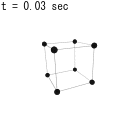

11. 自由な剛体

剛体の運動方程式。
この章のシミュレーション：
自由な速度
Ω 1
前章で積み残しとなっていた、剛体の運動方程式を求めたい。前章では、剛体の自由な速度として、「剛体上の基準点
x 0 ˙ x 0 ω （まとめて
Ω
Ω = [ ˙ x 0 ω ] Ω ˙ Ω = [ ⋯ ] (1)
もちろん、式(1 x 0 , θ ω = ˙ θ θ θ 1 θ ω ω = A ˙ θ 1 ¨ θ
この章では、式(
1 )のような運動方程式が式(
8 )で与えられることを導き
（11.1節） 、その後、初期値の取り方などを含めた計算の方法について述べる
（11.2節） 。
11.1
自由な速度の運動方程式
質点要素の速度
˙ X Ω 4
式(
1 )を求める方法は、自由な座標による運動方程式
（第9章の【9.1-注1】） を求めた時と同様である。即ち、全ての質点要素
x i
に対する運動方程式
⎡ ⎢
⎢ ⎣ m 1 m 2 ⋱ ⎤ ⎥
⎥ ⎦ M ⎡ ⎢
⎢ ⎣ ¨ x 1 ¨ x 2 ⋮ ⎤ ⎥
⎥ ⎦ ¨ X = ⎡ ⎢
⎢ ⎣ f 1 f 2 ⋮ ⎤ ⎥
⎥ ⎦ F + ⎡ ⎢
⎢ ⎣ f c 1 f c 2 ⋮ ⎤ ⎥
⎥ ⎦ F c (2)
において、
¨ X
を
˙ Ω
で表した後、式(
1 )の形に変形すれば、未知の量である拘束力
F c
が消え、既知の量だけで書ける
（外力
F 。
この方針に従って、質点要素の速度
˙ X Ω i ˙ x i x i 0 = x i − x 0 ˙ x i = ˙ x 0 + ω × x i 0 （ 前 章 の 10.2 節 ） = [ 1 − x i 0 × ] Ω (3) ˙ X ˙ X Ω ˙ X = ⎡ ⎢
⎢ ⎣ ˙ x 1 ˙ x 2 ⋮ ⎤ ⎥
⎥ ⎦ = ⎡ ⎢
⎢ ⎣ 1 − x 10 × 1 − x 20 × ⋮ ⋮ ⎤ ⎥
⎥ ⎦ Ω ≡ A Ω (4)
基準点を重心(6 7
第8章の8.2節でみたように、
時間に依存しない拘束に由来する 拘束力
F c
は、ダランベールの原理により、速度
˙ X
と「直交」する：
˙ X T F c = 0
これに、先ほど求めた式(
4 )を代入すると
A T F c = 0
となることが分かる。
従って、運動方程式(
2 )
M ¨ X = F + F c
に
A T
を左乗すれば、拘束力
F c
が消えて
A T M ¨ X = A T F
となる。これに先ほど求めた速度の関係式(
4 )を代入すると、
Ω
に対する運動方程式が得られる：
d d t ( μ Ω ) = A T F + ˙ A T M A Ω μ ≡ A T M A (5)
この式は、
˙ Ω = [ ⋯ ]
の形で書くこともできるが、
μ Ω
の微分の形で書いているのは、そのほうが簡単になることが後で分かるからである
（式(7 。
後は、上式(
5 )の各項を計算するだけである。実際の計算を行うに当たって、基準点
x 0
を重心
x g
に取ることにしよう：
（
m ≡ ∑ m i
x 0 = x g = 1 m ∑ i m i x i (6)
重心を基準に取る理由は、剛体内の拘束力は作用・反作用の法則
（第5章の【5.1-注1】） を満たすので、重心の速度
˙ x g
は拘束力の影響を受けない
（同【5.2-注1】） からである。つまり、拘束力は
˙ x g
を変化させず角速度
ω
のみに影響を与えるようになるため、運動方程式が簡単になるだろう、ということである。
式(
6 )のもとで、運動方程式(
5 )の各項を変形していけばよく、その結果は以下の【11.1-注1】のようになる。それらを代入すると、最終的に以下の結果が得られる：
（
x i g = x i − x g
d d t ( μ Ω ) = [ ∑ i f i ∑ i x i g × f i ] μ ≡ [ m 0 0 − ∑ i m i ( x i g × ) 2 ] (7) この式を見ると、外力
f i 0 μ Ω = c o n s t . 5 )で述べたのは、このことである。また、
μ x 0 = x g
【11.1-注1】運動方程式(5
運動方程式(
5 )の各項を、
x 0 = x g
のもとで計算すると、以下のようになる：
（
x i g = x i − x g
μ = [ m 0 0 − ∑ i m i ( x i g × ) 2 ] A T F = [ ∑ i f i ∑ i x i g × f i ] ˙ A T M A Ω = 0
導出
第1式：
μ ≡ A T M A = [ 1 1 ⋯ x 1 g × x 2 g × ⋯ ] ⎡ ⎢
⎢ ⎣ m 1 m 2 ⋱ ⎤ ⎥
⎥ ⎦ ⎡ ⎢
⎢ ⎣ 1 − x 1 g × 1 − x 2 g × ⋮ ⋮ ⎤ ⎥
⎥ ⎦ = [ ∑ i m i − ∑ i m i x i g × ∑ i m i x i g × − ∑ i m i ( x i g × ) 2 ] ‖ ‖
‖
‖
‖
‖
‖ ⇓ ∑ i m i x i g = ∑ i m i ( x i − x g ) = m ( x g − x g ) = 0 = [ m 0 0 − ∑ i m i ( x i g × ) 2 ]
第2式：
A T F = [ 1 1 ⋯ x 1 g × x 2 g × ⋯ ] ⎡ ⎢
⎢ ⎣ f 1 f 2 ⋮ ⎤ ⎥
⎥ ⎦ = [ ∑ i f i ∑ i x i g × f i ]
第3式：
˙ A T M A Ω = [ 0 0 ⋯ ˙ x 1 g × ˙ x 2 g × ⋯ ] ⎡ ⎢
⎢ ⎣ m 1 m 2 ⋱ ⎤ ⎥
⎥ ⎦ ⎡ ⎢
⎢ ⎣ 1 − x 1 g × 1 − x 2 g × ⋮ ⋮ ⎤ ⎥
⎥ ⎦ Ω = [ 0 0 ∑ i m i ˙ x i g × − ∑ i m i ˙ x i g × x i g × ] Ω = [ 0 0 0 − ∑ i m i ˙ x i g × x i g × ω ] ‖ ‖
‖
‖
‖ ⇓ ˙ x i g × x i g × ω = − ˙ x i g × ( ω × x i g ) = − ˙ x i g × ˙ x i g = 0 = 0
剛体の運動方程式(7 8
式(
7 )を、重心速度
˙ x g
に対するものと、角速度
ω
に対するものに分けて書くと、以下のようになる：
m ¨ x g = f d d t ( I g ω ) = τ g ⎫ ⎬ ⎭ (8)
ただし、
赤字 部分は以下のように定義される：
全 質 量 ： m = ∑ i m i 合 力 ： f = ∑ i f i 慣 性 モ ー メ ン ト ： I g = ∑ i m i ( ∣ ∣ x i g ∣ ∣ 2 − x T i g x T i g ) ト ル ク ： τ g = ∑ i x i g × f i (9) ただし、
I g a × b × = b a T − a T b 慣性モーメントとトルクに添え字
g
がついているのは、重心を基準にしていることを表している。
式(
8 )の第1式を見ると、重心
x g
の運動方程式は、質点の運動方程式と同じ形になっている。即ち、
x g
の時間変化を知るだけであれば、剛体に働く外力の和さえ分かればよく、物体の形状を考慮する必要はない。キャッチボールや振り子を考える際に、物体の形状を考慮しなかったが、実際それでよかったわけである。
次に、第2式についてである。慣性モーメント
I g
がスカラー行列
（＝単位行列に実数をかけた行列） になる場合を考えると、
˙ I g
の公式
（以下の【11.1-注2】） より、
˙ I g = 0
となる。従って、式(
8 )の第2式は
I g ˙ ω = τ g
となる。これは、第1式
m ¨ x g = f
と同じ形をしている。従って、
I g
は大きいほど回転運動を変化させづらくなるような量であり、トルク
τ g
は、物体を回転させようとする「力」のようなものである。
例えば、ボールに力を加えて回転させる時、最も効率よく回転させることができるのは、球面に沿った方向に力を加える場合であることが直感的にわかるが、実際この時、ちょうどトルクの大きさも最大になっている。逆に、ボールの中心に向かうような力をの場合、トルクが
0
一方、
I g ˙ ω = [ ⋯ ] （以下の【11.1-注2】を代入する）
˙ ω = I − 1 g ( τ g − ω × I g ω ) (10) τ g = 0 ˙ ω 0
【11.1-注2】慣性モーメント
I g
慣性モーメント
I g ˙ I g = ω × I g − I g ω ×
導出
定義式(
9 )の微分を素直に計算するだけである：
（見やすくするため
x i g x i
˙ I g = d d t ∑ i m i ( | x i | 2 − x i x T i ) ‖ ‖
‖
‖
‖
‖
‖
‖
‖
‖
‖ ⇓ d d t | x i | 2 = 2 x T i ˙ x i = 2 x T i ω × x i = 0 − d d t x i x T i = − ˙ x i x T i − x i ˙ x T i = − ω × x i x T i + x i x T i ω × = ∑ i m i ( − ω × x i x T i + x i x T i ω × ) = ω × ∑ i m i ( | x i | 2 − x i x T i ) − ∑ i m i ( | x i | 2 − x i x T i ) ω × = ω × I g − I g ω ×
11.2
計算方法
運動方程式(
8 )を用いれば、重心速度
˙ x g
と角速度
ω
の時間変化が計算できることになる。しかし、初期値をどのように設定するかなど、はっきりさせるべき点がある。この節では、実際に計算する方法をまとめることにする。特に、1階の正規形に変形すると式(
15 )のようになる。
剛体のモデリング
まず、剛体の形状を定義する必要がある。剛体を適当な位置・向きに配置し、その時の各質点要素
m i , ˜ x i
を定義する。これを剛体のモデル位置と呼ぶことにする。合わせて、このモデル位置での慣性モーメント
˜ I g
と重心
˜ x g
も計算しておく：
˜ I g = ∑ m i ( ∣ ∣ ˜ x i g ∣ ∣ 2 − ˜ x T i g ˜ x T i g ) ˜ x g = 1 m ∑ i m i ˜ x i ⎫ ⎪
⎪
⎪ ⎬ ⎪
⎪
⎪ ⎭ (11)
モデル位置は、計算しやすいようにとればよい。例えば、
˜ I g
が対角行列になるようにとるといった具合である
（以下の【11.2-注1】の式(13 。
剛体の位置・向きが変化した時、任意の質点要素の座標
x i
は、重心
x g
と回転行列
R
を与えることによって以下のように決まる：
（前章の10.1節）
x i = x g + R ( ˜ x i − ˜ x g ) (12)
よって
x g , R
の時間変化を計算すれば、剛体の全ての質点要素の運動を計算できる、即ち、剛体の運動が計算できることになる。
なお、任意の
R 14
【11.2-注1】慣性モーメントの性質
[1] どのような剛体であっても、適当な
R 即ち適当に回転させることによって、
I I = ⎡ ⎢ ⎣ I 1 0 0 0 I 2 0 0 0 I 3 ⎤ ⎥ ⎦ (13) I 1 , I 2 , I 3 これは、線形代数の定理「任意の対称行列は回転行列で対角化できる」を用いて示せる。
[2] モデル位置での慣性モーメントが
˜ I R I I = R ˜ I R T I − 1 = R ˜ I − 1 R T } (14)
[3] 全ての質点要素が同一直線上に乗っている場合、主慣性モーメントのなかに0となるものが現れる。すると、
I
に逆行列が存在しなくなり、運動方程式(
8 )は成立しなくなる。これは自然な結果である。というのも、質点要素が同一直線上に乗っている場合には、その直線の周りの回転角度が意味をなさなくなるためである。逆に、質点要素が、平面的あるいは立体的に分布している場合には、
I
は常に逆行列を持つ。
解くべき運動方程式は、式(15 16
上述の通り、剛体の運動を計算することは、重心位置
x g ( t )
および回転行列
R ( t )
の時間変化を計算することに他ならない。そのためには、運動方程式(
8 )を、1階の微分方程式
（第1章の【1.3-注1】） にすると見通しがよい：
（上2つが重心に関するもの、下2つが回転に関するもの）
d d t ⎡ ⎢
⎢
⎢
⎢ ⎣ x g ˙ x g R I g ω ⎤ ⎥
⎥
⎥
⎥ ⎦ = ⎡ ⎢
⎢
⎢
⎢ ⎣ ˙ x g m − 1 f ω × R τ g ⎤ ⎥
⎥
⎥
⎥ ⎦ (15)
時刻
t = 0
における
[ ⋯ ]
部分の値を与えたうえで、微小な時間ステップ
δ t
ずつ時刻を進めていけば、
x g ( t )
および
R ( t )
を求めることができる。ただし、
f
と
τ g
は、数値計算のステップごとに与えられている必要がある。
式(
15 )の第4成分では
I g ω （
≡ L の時間変化を計算するようになっている。
L
から
ω
を求めるには
ω = I − 1 g L
を計算すればよいわけだが、そのためには各時刻での
I − 1 g
を求めなければならない。これは、式(
14 )により、
R
とモデル座標での慣性モーメント
˜ I g
から計算できる。
あるいは、
L 10 15 ˙ ω = [ ⋯ ] L
あるいは、
R θ ω ˙ θ ˙ θ = A ω d d t ⎡ ⎢
⎢
⎢
⎢ ⎣ x g ˙ x g θ I g ω ⎤ ⎥
⎥
⎥
⎥ ⎦ = ⎡ ⎢
⎢
⎢
⎢ ⎣ ˙ x g m f A ω τ g ⎤ ⎥
⎥
⎥
⎥ ⎦ (16) θ I g R θ
例：重力下ではトルクが0
例として、重力のみが外力として作用している場合を考える。力の総和
f τ g
f = ∑ i m i g = m g ∵ m ≡ ∑ i m i τ g = ∑ i x i g × m i g = 0 ∵ ∑ i m i x i g = m ( x g − x g ) = 0
よって、運動方程式(
8 )の第1式より重心
x g
の運動方程式は
m ¨ x g = m g
となり、第1章の質点のキャッチボールの場合と同じになる。また、同第2式よりトルクが発生しないので、重力は回転には影響しないことも分かる。
そこでここでは、外力が働いていない場合に、剛体がどのように回転運動するのかについて、数値計算を行う。例えば右図は、立方体の各頂点に等しい質量のおもりを配置した場合である。以下の数値計算では、剛体の回転安定性について、いくつかの例を示す。